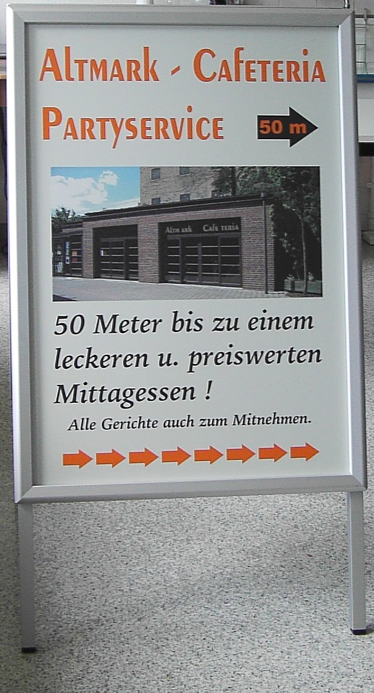
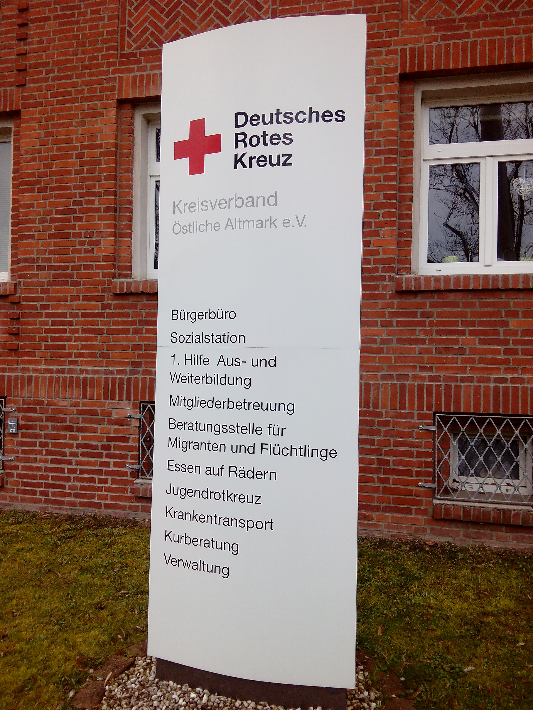

Aufsteller und Pylonen – Aufmerksamkeit auf den ersten Blick
Ob im Eingangsbereich, auf Messen oder bei Veranstaltungen – unsere Aufsteller und Pylonen sorgen dafür, dass Ihre Botschaft sofort ins Auge fällt. Flexibel, mobil und individuell gestaltbar, sind sie die perfekten Helfer für Marketing, Orientierung und Promotion.
Unsere Lösungen für Sie:
- Aufsteller und Kundenstopper – ideal für Shops, Ausstellungen oder als Hinweisgeber im Innen- und Außenbereich.
- Werbe- und Info-Pylonen – auffällig und stabil, optimal für Veranstaltungen oder Firmenhöfe.
- Event- und Messeaufsteller – leicht transportierbar und schnell aufgestellt.
- Individuelle Designs – bedruckt nach Ihrem Corporate Design, in allen Größen und Formen.
- Spannrahmen für Wandmontage – praktisch und vielseitig einsetzbar.
Ihre Vorteile:
- Sofortiger Blickfang – mobil und flexibel positionierbar
- Langlebig und standfest – geeignet für Innen- und Außenbereich
- Gestaltung nach Ihren Wünschen – passend zu Ihrem Corporate Design
- Einfache Handhabung und schneller Auf- sowie Abbau
Mit unseren Aufstellern und Pylonen schaffen Sie ein professionelles Erscheinungsbild, das Ihre Botschaft klar vermittelt.

